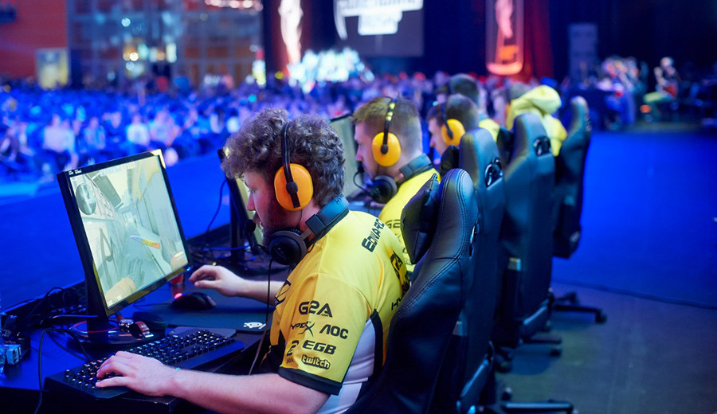
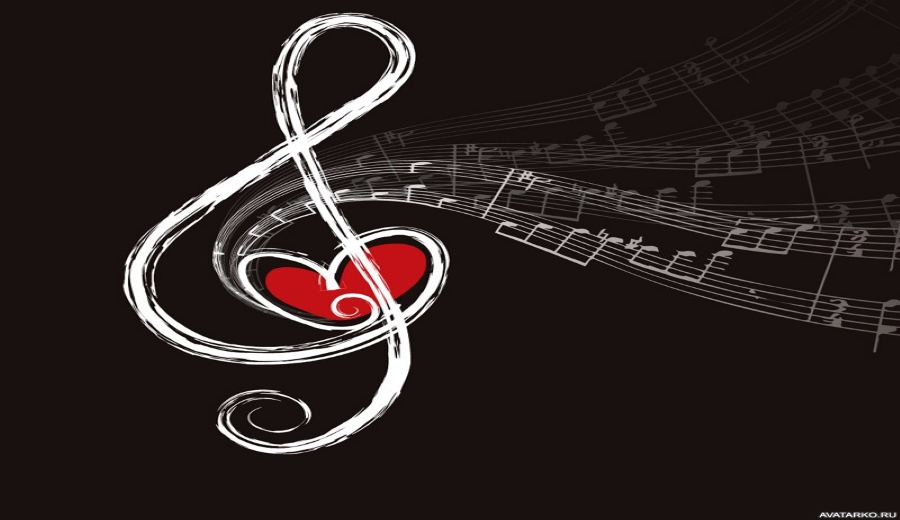
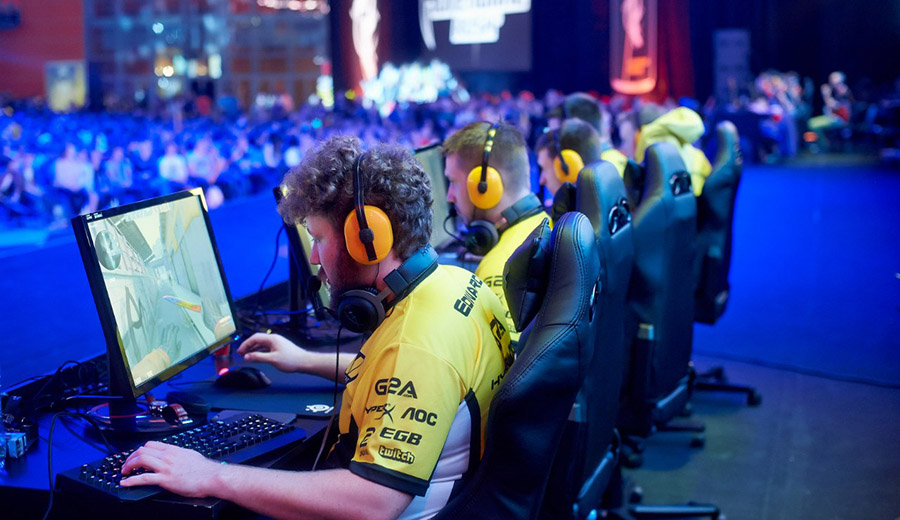
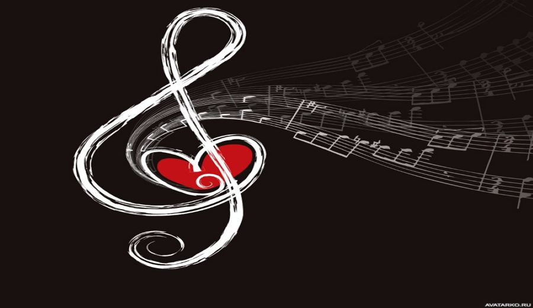

Еще с раннего детства я не сидел на месте и искал чем бы себя занять. Мой выбор пал на футбол. Он меня сильно затянул. Помимо этого я учился в музыкальной школе по классу Баян. Но совмещать эти 2 увлечения было трудно, особенно в дестве, когда хотелось и просто погулять. Пришлось выбрать музыку. После окончания музыкальной школы, я вернулся в ту же секцию по футболу. Конечно, не малую роль в моей жизни занимали и видеоигры.
Если подвести итоги, то к своим 18-ти годам, я играл в футбол около 8 лет, закончил музыкальную школу,добился успехов в киберспорте, на уровне любителя играю в волейбол,баскетбол, катаюсь на коньках, лыжах, роликах, на скейтборде,